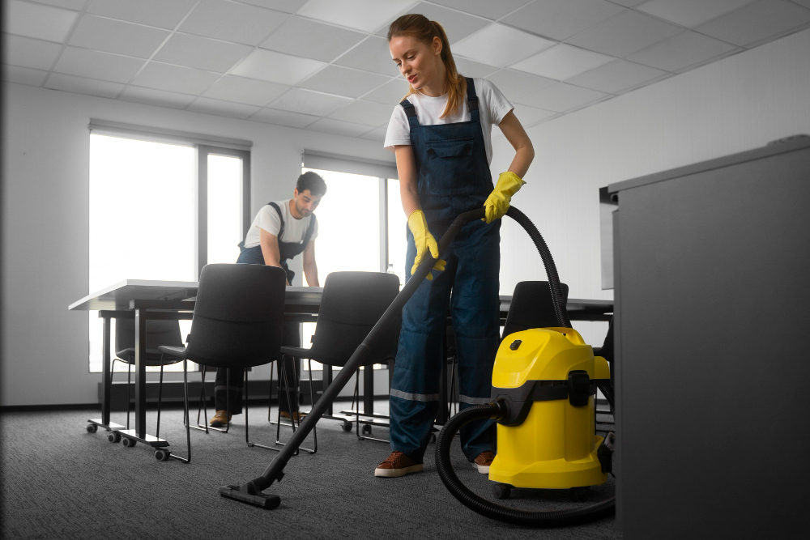
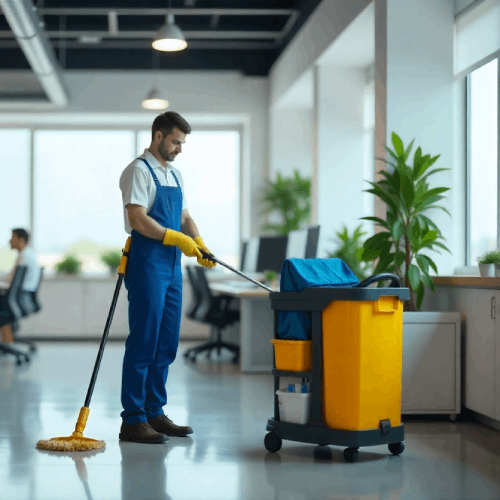
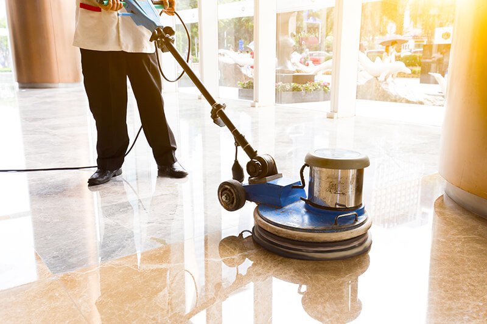
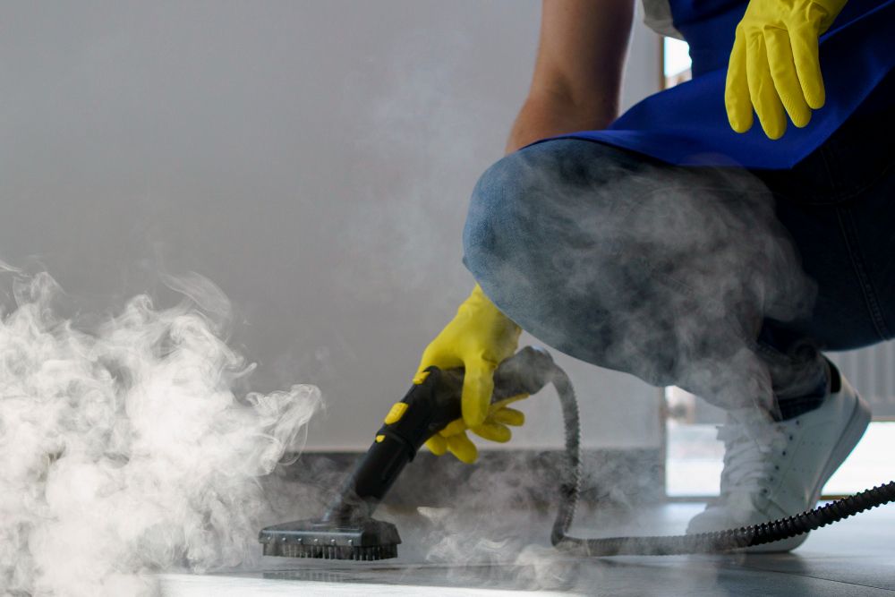

SWAT Entretien est votre partenaire de confiance pour tous vos besoins d'entretien commercial à Trois-Rivières. Qu'il s'agisse de bureaux, commerces, cliniques ou écoles, notre équipe locale est prête à vous offrir un service impeccable.

Voici ce que nous proposons :


Chez SWAT Entretien, nous savons que les gestionnaires et les entrepreneurs de Trois-Rivières recherchent avant tout la tranquillité d'esprit. Votre priorité est d'évoluer dans un environnement propre et sécuritaire, sans avoir à gérer la logistique de l'entretien. C'est pourquoi nous proposons un service clés en main, conçu pour s'intégrer à vos activités, sans perturber vos opérations.
Que vous dirigiez un bureau, un commerce, une clinique, une usine ou une garderie, notre équipe ajuste ses méthodes, ses produits et ses horaires afin de répondre parfaitement à vos besoins spécifiques.
L'équipe de nettoyage commercial couvre non seulement le centre-ville de Trois- Rivières, mais aussi les secteurs avoisinants, comme le Cap-de-la-Madeleine et les autres municipalités proches.
